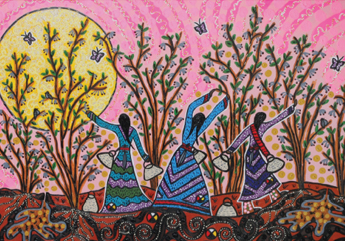

|
| ISSUE #7 |
|
Teachings of the Sacred Circle  Picking Saskatoons
acrylic, mica beads on canvas, 24 x 36 in., 2009 Leah Dorion For me, art is a spiritual expression. My work is intended to be multisensory. The paintings are tactile, and many times the paint is applied with my own fingers in order to help me connect on a deeper, physical level. I often use other tools that help add dimension and depth to my art. My paintings are intended to be very visually stimulating. It is important to me to incorporate elements of indigenous beadwork to honour my First Nations and Metis women ancestors. In my paintings, I play with light, color value, texture, and movement. I honour the traditional art forms of my women ancestors, but I bring them into a contemporary form. Sometimes my paintings will dance for me because they have been designed to have movement and flow. I always find that balance and harmony are key foundations for my work. Teachings of the scared circle are central elements in the design of all my paintings.
|
This is an excerpt of the full article. To view complete text, please subscribe . You may also purchase a back issue |
Lake publishes fiction, poetry, critical essays, interviews, reviews and visual arts related to the environment.
|
Lake - Journal of Arts and Environment
Faculty of Creative and Critical Studies at the University of British Columbia Okanagan |
| web design by Idea Bureau |